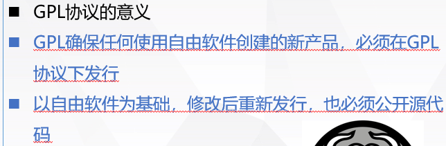
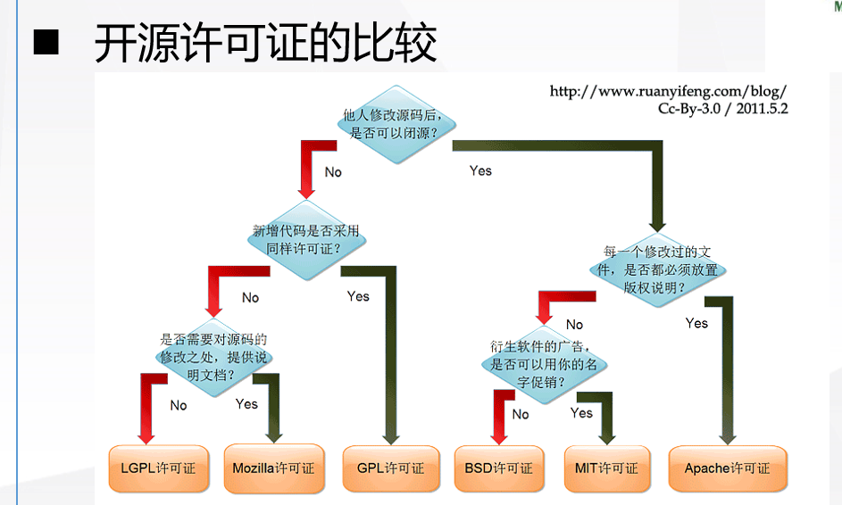
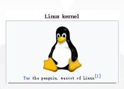
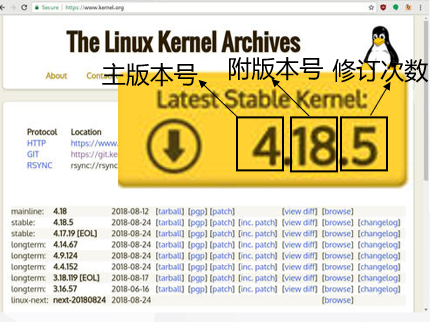
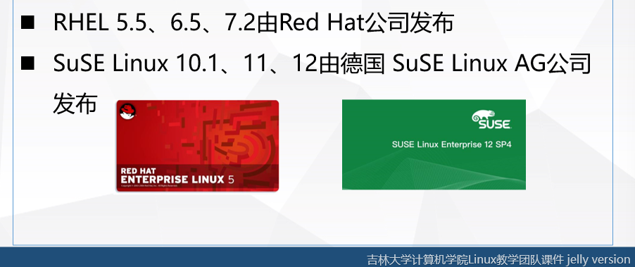
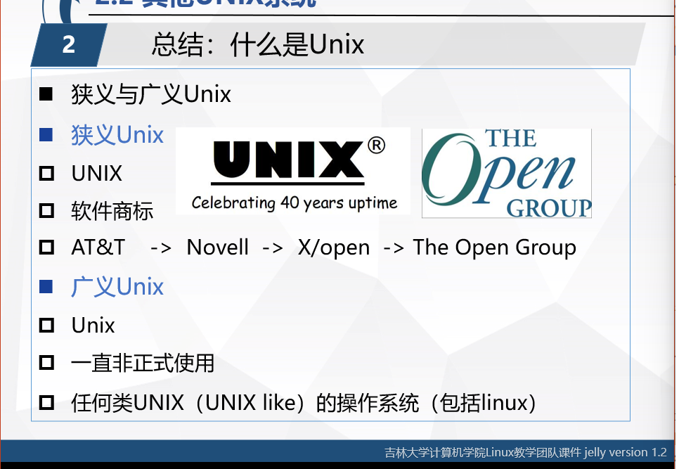
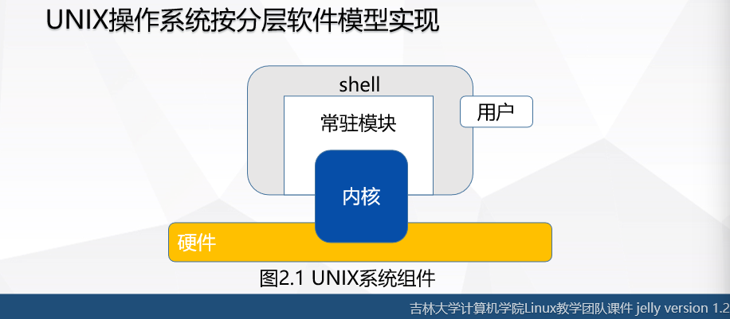
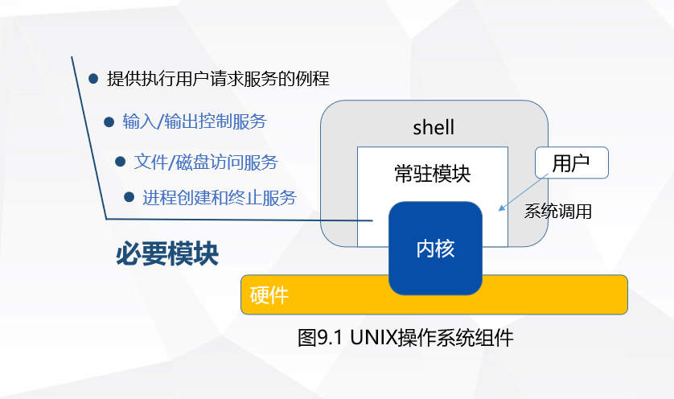
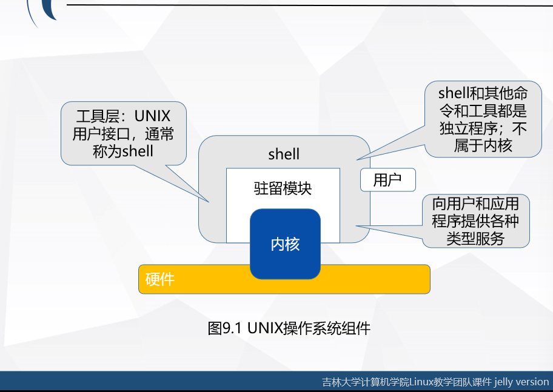
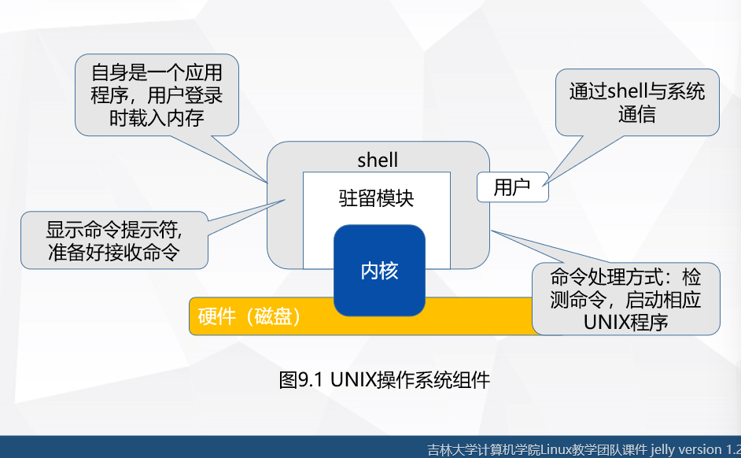

Linux课程复习笔记
声明：本篇文章参考和引用了2023下半年吉林大学郭东老师的PPT，如有侵权，请联系我，我将会立马删除
一、UNIX操作系统
1.历史简介
1969年诞生于AT&T贝尔试验室
开发者是Ken Thompson 和 Dennis Ritchie
最初使用汇编语言开发，后用C语言重写UNIX源码，UNIX和C完美地结合成一个统一的整体
UNIX以源代码的形式发行，形成了两个重要的流派:
UNIX SYSTEM V （AT&T）和 Berkeley UNIX(UCB)
2.标准化
即对每种实现必须定义的各种限制进行说明
有两个重要的UNXI标准：
- 系统V接口定义 SVID 例如： at&t
- 可移植操作系统接口 POSIX 例如：IEEE、 ISO
3.其他的UNIX系统
1> Linux
目前应用最为广泛的类UNIX系统
【背景】
「两个人」：
Richard Stallman和 Linus Torvalds，前者启动GNU项目 创建FSF组织 提出copyleft理念 制订GPL协议 发起开源运动
「四个一」：
- 一个项目 GNU
GNU’s NOT UNIX
目标：
创建一个自有共享 可以被任何人修改的类UNIX操作系统
与UNIX系统兼容
不受UNIX名字和源代码私有权限制
能运行UNIX程序
GNU项目完成了许多UNIX系统上应用程序的仿制品
GNU项目开发的重要软件工具有：
GCC:GNU编译器套件，包括GNU c编译器
G++：C++编译器 是GCC的一部分
GDB：源代码级的调试器，支持多种语言
GNU make: UNUX make命令的免费版本
bash: 命令解释器（shell）
GNU Emacs : 文本编辑器及环境
未成功开发操纵系统内核
-
一个组织 FSF
自由软件基金会
目标：
执行GNU计划 提供技术 法律以及财政支持
开发更多的自有软件
-
一个理念 Copyleft
-
一个许可证 GPL
背景：
发行大型软件需要的合适许可协议已经有的许可协议：
Copyright©：版权所有，即软件的一切权利归软件作者私有，用户只有使用权没有其他权利包括复制软件的权利
Richard Stallman提出Copyleft的概念（著左权）
利用现有的著作体制来保护所有用户和二次开发者的自由授权方式
它赋予所有人运行程序，复制程序，修改程序和发行修改程序的权限，但是使用者不能在修改后的软件上添加限制
基于copyleft Stallman提出来了GPL许可证，GNU通用的公共许可证
GPL授予程序接受人以下权利，或称“自由”：
- 赋予所有人运行程序，复制程序，修改程序和发行修改程序的自有
- 重新发行软件的人不能在修改后的软件上添加限制
GNU开发的工具都在GPL下发行
意义：

其他开源许可证：
Apache ,BSD,MIT,Mozilla

Linux的诞生
内核在GPL协议下发布，参与了开源运动，Linux内核更新速度极其快
吉祥物：tux

Linux的含义：操作系统内核或者是基于linux内核的操作系统
Linux操作系统版本：包括内核版本和发行版本
[内核版本]：有Linux内核社区统一进行发布，包括主版本号 次版本号和修订次数，奇数表示开发版本，偶数表示稳定版本，修订次数标明内核被修改的次数

「发行版本」 发行版的名称或版本号是由发行版的维护者决定


2> UNIX操作系统概要
计算机系统= 硬件+系统软件+应用软件
UNIX操作系统是包含了文本编辑器 编译器 和其他系统工具程序的程序集
UNIX操作系统是按照分层软件模型实现的

内核：




「相关概念」
虚拟计算机：UNIX向系统中每个用户指定一个执行环境，这个环境称为虚拟计算机，包括一个用户接口终端和共享的其他计算机资源，UNIX是多用户操作系统 虚拟计算机的集合，而从用户视角是独想计算机
进程：UNUX系统通过进程向用户分配资源
「特征」
可移植性（c语言保证）
多用户性：多用户同时共同使用计算机，各个用户执行不同的程序，提供安全机制隔离用户
多任务性：启动一个任务后继续执行其他任务，允许用户在前台和后台多个任务之间进行切换
分级文件系统：对数据和程序文件进行分组管理，便于查找文件和程序
与设备独立的输入输出操作：
用户界面shell：
命令解释器： 控制用户与系统的交互，实现用户命令输入与结果输出
shell脚本： UNIX Shell是一种成熟的编程语言，Shell 脚本 包含一系列命令， 实现较为复杂 的功能
系统工具与服务：UNIX系统包括100多个系统工具程序（命令），标准的UNIX系统组成部分完成用户所需要的各种功能